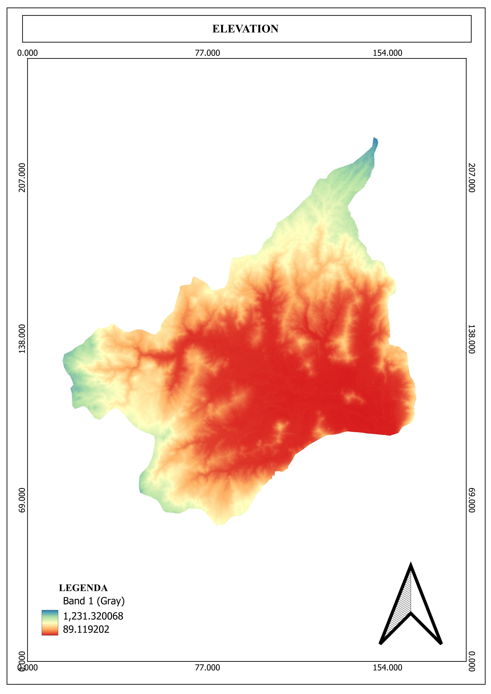
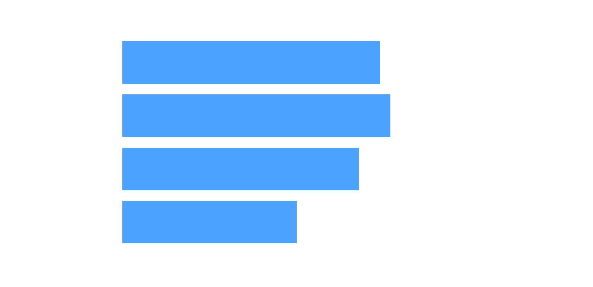
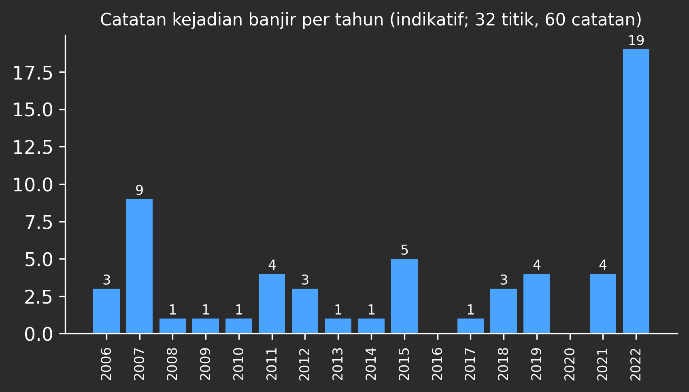
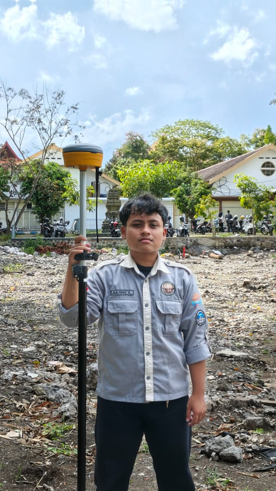
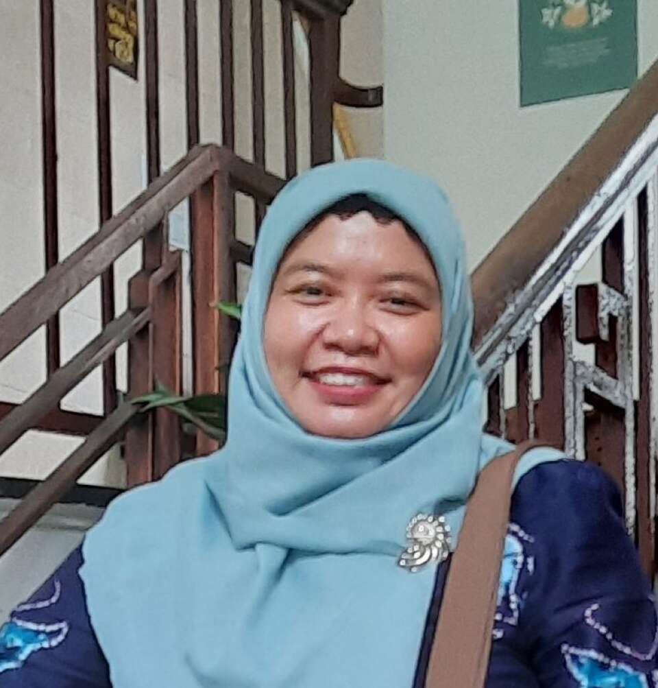

Intisari
Dari wilayah kajian seluas 40.509 ha, sekitar 19% masuk kelas kerawanan banjir tinggi dan sangat tinggi. Luasnya tidak besar, tetapi berimpit dengan tempat orang tinggal: sekitar separuh kawasan permukiman dan 233 dari 478 fasilitas publik berada di zona itu.
Zona rawan membentuk satu pita lebar di dataran tengah, dan sebagian besar permukiman di Pogalan, Trenggalek, Karangan, dan Tugu berada di dalamnya. Peta ini alat untuk menentukan di mana verifikasi lapangan dan perencanaan perlu dimulai lebih dulu, bukan prediksi banjir pada hari tertentu.
Latar belakang dan tujuan
Bencana hidrometeorologi mendominasi kejadian bencana di Indonesia, dan banjir termasuk jenis yang paling sering terjadi. Hingga 17 Desember 2025, banjir tercatat 1.584 kejadian dari 3.116 bencana (BNPB, 2025). Hingga 29 Oktober 2026, BNPB mencatat 2.236 bencana, 99,19% di antaranya hidrometeorologi, dengan banjir di urutan kedua (590 kejadian) setelah kebakaran hutan dan lahan (BNPB, 2026). Indeks Risiko Bencana Indonesia 2024 menempatkan 321 kabupaten/kota, atau 62%, pada tingkat risiko banjir tinggi (BNPB, 2024). Kondisi ini menuntut informasi spasial yang menunjukkan di mana bahaya berada serta permukiman dan fasilitas apa yang terpapar.
Wilayah kajian mencakup sebagian Kabupaten Trenggalek dan Kabupaten Ponorogo pada sistem DAS Brantas. Di Kabupaten Trenggalek, sistem Sub-DAS Ngrowo-Ngasinan berulang kali dilanda banjir: banjir bandang pertama yang tercatat terjadi pada 31 Agustus 1992 dan melanda lima kecamatan (Fauziah, 2008). Sungai Bagong, bagian dari sub-DAS tersebut, menyumbang debit banjir besar sehingga sistem pengendalian banjir belum dapat mengatasi banjir di Kota Trenggalek secara tuntas (Mustika, 2019).
Kejadian 18 Oktober 2022 memperlihatkan dampaknya pada ruang terbangun. BPBD mencatat 25 desa di lima kecamatan (Trenggalek, Karangan, Pogalan, Durenan, Gandusari) dan 7.440 jiwa terdampak (BPBD Kab. Trenggalek, 2022). Banjir juga menggenangi rumah sakit daerah sehingga 47 pasien rawat inap dievakuasi, dan Bupati menilainya lebih besar daripada banjir bandang 2006. Permukiman dan fasilitas vital dengan demikian berada pada jalur bahaya yang berulang.
Upaya struktural terus berjalan, antara lain Bendungan Bagong yang dirancang menampung 17,4 juta m³ dan percepatan dinding pengendali banjir Sungai Tawing di Pogalan oleh BBWS Brantas pada November 2026 (Antara, 2026). Upaya itu perlu dilengkapi informasi spasial yang menghubungkan kerawanan dengan sebaran permukiman, fasilitas publik, dan jalan sebagai dasar penataan ruang. Pembelajaran mesin kini banyak dipakai untuk pemetaan kerawanan banjir, dan Liao dkk. (2024) menekankan pentingnya ketangguhan (robustness) dan interpretasi model.
Penelitian ini memetakan kerawanan banjir pada resolusi 30 m dengan Random Forest dan optimasi hyperparameter, lalu menumpangsusunkan hasilnya dengan permukiman, fasilitas publik, dan jalan skala 1:25.000 untuk menilai keterpaparan. Hasilnya diharapkan menjadi dasar perencanaan tata ruang dan penguatan ketahanan wilayah.
Rumusan masalah
- Bagaimana sebaran dan luas tingkat kerawanan banjir di wilayah kajian?
- Berapa luas permukiman, jumlah fasilitas publik, dan panjang jalan di zona kerawanan tinggi-sangat tinggi, dan di kecamatan mana keterpaparan itu terkonsentrasi?
- Bagaimana kinerja Random Forest dengan optimasi hyperparameter, dan apa keterbatasannya?
Tujuan
- Memetakan kerawanan banjir pada resolusi 30 m dalam lima kelas.
- Menganalisis keterpaparan permukiman, fasilitas publik, dan jalan serta mengidentifikasi kecamatan prioritas.
- Mengevaluasi kinerja model dan menyatakan keterbatasannya.
Peta Elevasi Lahan

Cara membaca peta
- Peta elevasi ini merupakan salah satu parameter yang digunakan dalam memodelkan sebaran kerawanan banjir.
- Dataran rendah di bagian tengah wilayah kajian berkorelasi kuat dengan kelas kerawanan yang tinggi.
Temuan utama
1. Zona rawan sempit, tetapi menumpuk di satu bentang
Sekitar 67% wilayah (kelas sangat rendah dan rendah) berkerawanan rendah. Kelas tinggi dan sangat tinggi hanya 19% (±10% tinggi, ±9% sangat tinggi), dan hampir semuanya berada di dataran tengah.
2. Permukiman berada tepat di zona itu
Sekitar separuh kawasan permukiman (2.791 dari 5.478 ha) berada di kelas tinggi sampai sangat tinggi, padahal zona itu hanya 19% wilayah. Hampir seluruhnya ada di empat kecamatan: Trenggalek (800 ha), Pogalan (752 ha), Karangan (734 ha), dan Tugu (503 ha). Sebagian besar permukiman di Pogalan (±100%), Trenggalek (87%), Karangan (82%), dan Tugu (53%) berada di zona tersebut.
3. Fasilitas publik ikut terpapar
Dari 478 fasilitas, 233 (49%) berada di zona tinggi sampai sangat tinggi: 15 dari 26 fasilitas kesehatan (58%), 45 dari 75 fasilitas pemerintahan (60%), 98 dari 185 fasilitas pendidikan (53%), dan 75 dari 192 tempat ibadah (39%). Layanan yang dibutuhkan saat tanggap darurat bisa ikut terganggu justru ketika banjir terjadi. Jalan yang terpapar sekitar 322 km dari 1.059 km (±30%).

4. Banjir memang pernah tercatat di wilayah ini
Inventori memuat 60 catatan pada 32 titik selama 2006-2022. Tahun 2022 paling banyak (19 catatan), disusul 2007 (9). Catatan ini indikatif karena dipengaruhi kelengkapan pelaporan.

Seberapa dapat dipercaya peta ini?
Model diuji pada titik latihnya sendiri. Pada semua titik, AUC mencapai 0,96. Namun titik non-banjir banyak berada di dataran tinggi yang mudah dibedakan dari lokasi banjir, sehingga nilai itu cenderung optimistis. Ujian yang lebih adil membandingkan titik banjir dengan non-banjir di dataran rendah saja: AUC turun menjadi 0,73, artinya model lebih baik daripada menebak tetapi terbatas di dataran rendah. Pada kurva tingkat keberhasilan, 10% area dengan probabilitas tertinggi mencakup 67% titik banjir (AUC 0,93; n = 21). Belum ada validasi dengan data independen.

Apa artinya bagi ketahanan wilayah
Usulan penulis berdasarkan pola peta, bukan hasil perhitungan model.
- Verifikasi lapangan dahulu di Trenggalek, Pogalan, Karangan, dan Tugu, tempat paparan permukiman terbesar.
- Cek fasilitas penting seperti fasilitas kesehatan dan kantor pemerintahan di zona tinggi: akses, jalur evakuasi, dan lokasi cadangan layanan.
- Pertimbangkan zona ini dalam tata ruang sebelum menambah permukiman atau fasilitas baru.
- Perbarui peta setelah ada data kejadian dan validasi independen yang lebih banyak.
Data dan metode
Metode: Random Forest dengan optimasi hyperparameter, menghasilkan peta probabilitas 30 m (UTM 49S) yang dibagi lima kelas.
Data latih: 196 titik, 32 di antaranya titik banjir, dan 21 titik banjir jatuh di dalam raster.
Keterpaparan: piksel raster kerawanan dihitung di dalam poligon kawasan permukiman RBI dan dijumlahkan; fasilitas dihitung per titik berdasarkan kelas di lokasinya; jalan dihitung dari titik tiap 50 m sepanjang garis, panjang adalah jumlah titik di kelas 4-5 dikali 50 m (perkiraan).
Keterbatasan: titik banjir sedikit; non-banjir didominasi dataran tinggi; resolusi 30 m terlalu kasar untuk permukiman kecil; catatan banjir indikatif; kelas bersifat relatif; belum ada validasi independen. Kajian ini tidak menganalisis tren iklim: rata-rata curah hujan antarkelas hampir tidak berbeda, sehingga pola kerawanan tidak dapat dikaitkan dengan hujan.
Sumber data: Peta RBI 1:25.000 (BIG) untuk permukiman, fasilitas, dan jalan.
Daftar pustaka
- Antara. (2026, 5 November). BBWS pacu pembangunan dinding pengendali banjir sungai di Trenggalek.
- BNPB. (2024, 2025, 2026). Indeks Risiko Bencana Indonesia.
- BPBD Kabupaten Trenggalek. (2022). Informasi banjir 18 Oktober 2022 di Kab. Trenggalek.
- Fauziah. (2008). Kejadian banjir di DAS Ngrowo Ngasinan tahun 1992-2008, Kabupaten Trenggalek [Skripsi, Universitas Indonesia].
- Liao, M., Wen, H., Yang, L., Wang, G., Xiang, X., & Liang, X. (2024). Improving the model robustness of flood hazard mapping based on hyperparameter optimization of random forest. Expert Systems with Applications, 241, 122682.
Tim Lemah Teles
Program Studi Geografi, Universitas Negeri Malang

Roy Juan Akbar
Prodi Geografi, Universitas Negeri Malang

Satrio Yohan Raditiya
Prodi Geografi, Universitas Negeri Malang

Dosen pembimbing
Dr. Satti Wagistina, S.P., M.Si
Prodi Geografi, Universitas Negeri Malang